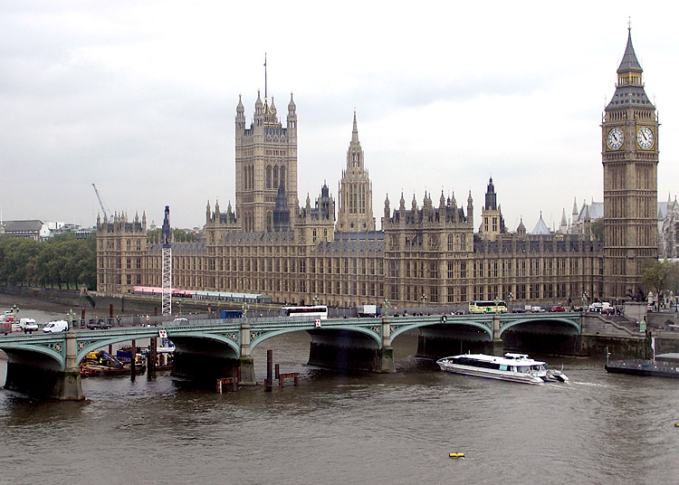

A - The duties involved in various occupations
In her pioneering survey, Sources of London English, Laura Wright has listed the variety of medieval workers who took their livings from the river Thames. The baillies of Queenhithe and Billingsgate acted as customs officers. There were conservators, who were responsible for maintaining the embankments and the weirs, and there were the garthmen who worked in the fish garths (enclosures). Then there were galleymen and lightermen and shoutmen, called after the names of their boats, and there were hookers who were named after the manner in which they caught their fish. The searcher patrolled the Thames in search of illegal fish weirs, and the tideman worked on its banks and foreshores whenever the tide permitted him to do so.
B - Transporting heavy loads manually
All of these occupations persisted for many centuries, as did those jobs that depended upon the trade of the river. Yet, it was not easy work for any of the workers. They carried most goods upon their backs, since the rough surfaces of the quays and nearby streets were not suitable for wagons or large carts; the merchandise characteristically arrived in barrels which could be rolled from the ship along each quay. If the burden was too great to be carried by a single man, then the goods were slung on poles resting on the shoulders of two men. It was a slow and expensive method of business.
C - The changing status of riverside occupations
However, up to the eighteenth century, river work was seen in a generally favourable light. For Langland, writing in the fourteenth century, the labourers working on river merchandise were relatively prosperous. And the porters of the seventeenth and early eighteenth centuries were, if anything, aristocrats of labour, enjoying high status. However, in the years from the late eighteenth to the early nineteenth century, there was a marked change in attitude. This was in part because the working river was within the region of the East End of London, which in this period acquired an unenviable reputation. By now, dockside labour was considered to be the most disreputable, and certainly the least desirable form of work.
D - An unprecedented population density
It could be said that the first industrial community in England grew up around the Thames. With the host of river workers themselves, as well as the vast assembly of ancillary trades such as tavern-keepers and laundresses, food-sellers and street-hawkers, shopkeepers and marine store dealers - there was a workforce of many thousands congregated in a relatively small area. There were more varieties of business to be observed by the riverside than ,in any other part of the city. As a result, with the possible exception of the area known as Seven Dials, the East End was also the most intensively inhabited region of London.
E - The creation of an exclusive identity
It was a world apart, with its own language and its own laws. From the sailors in the opium dens of Limehouse to the smugglers on the malarial flats of the estuary, the workers of the river were not part of any civilised society. The alien world of the river had entered them. That alienation was also expressed in the slang of the docks, which essentially amounted to backslang, or the reversal of ordinary words. This backslang also helped in the formulation of Cockney rhyming slang*, so that the vocabulary of Londoners was directly'affected by the life of the Thames.
F - Temporary work for large numbers of people
The reports in the nineteenth-century press reveal a heterogeneous world of dock labour, in which the crowds of casuals waiting for work at the dock gates at 7.45 a.m. include penniless refugees, bankrupts, old soldiers, broken-down gentlemen, discharged servants, and ex-convicts. There were some 400-500 permanent workers who earned a regular wage and who were considered to be the patricians of dockside labour. However, there were some 2,500 casual workers who were hired by the shift. The work for which they competed fiercely had become ever more unpleasant. Steam power could not be used for the cranes, for example, because of the danger of fire. So the cranes were powered by treadmills. Six to eight men entered a wooden cylinder and, laying hold of ropes, would tread the wheel round. They could lift nearly 20 tonnes to an average height of 27 feet (8.2 metres), forty times in an hour. This was part of the life of the river unknown to those who were intent upon its more picturesque aspects.